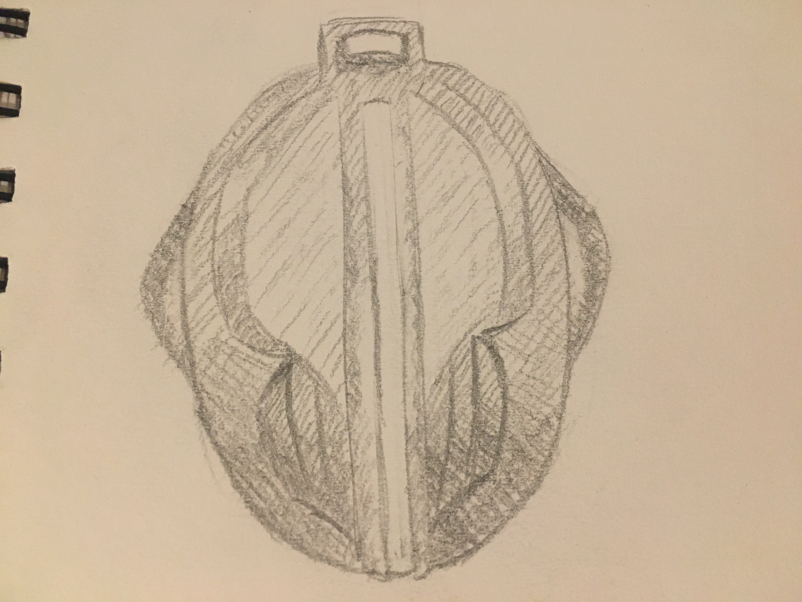
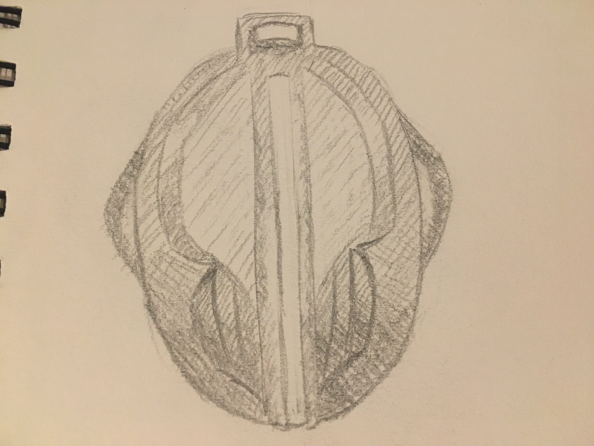

Depth Practice
By Alex
I followed the tip made by Michelle to start the filling up drawing with my middle shade then increase or decrease the intensity. I am satisfied about how the image turned out, and find this method very helpful.
I followed the tip made by Michelle to start the filling up drawing with my middle shade then increase or decrease the intensity. I am satisfied about how the image turned out, and find this method very helpful.
that look very cool!!! if you wanted to continue refining and getting better my favourite thing to do is look at the structure of things rather than drawing which can be quite a fun exercise especially with images such as the reference pic you used today goodluck on your art endeavours !!